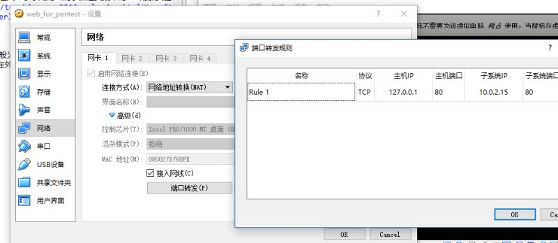
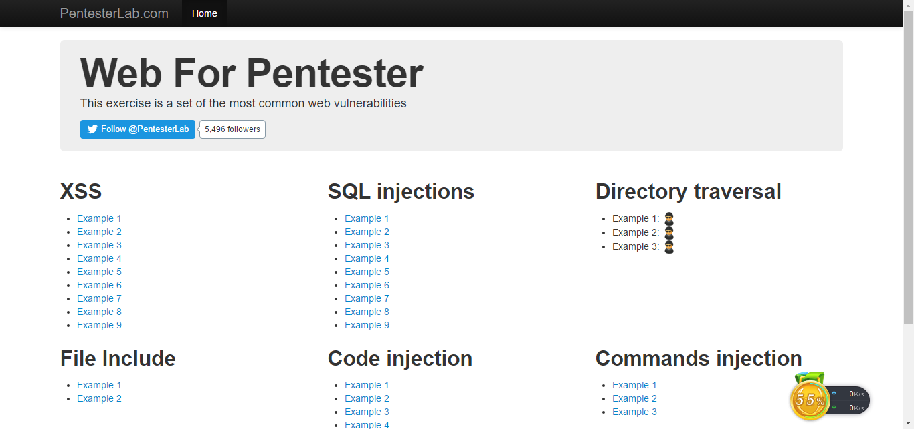
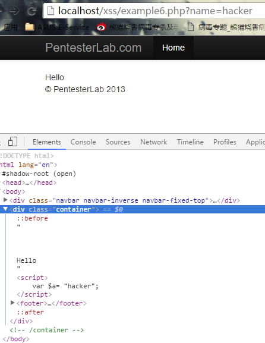
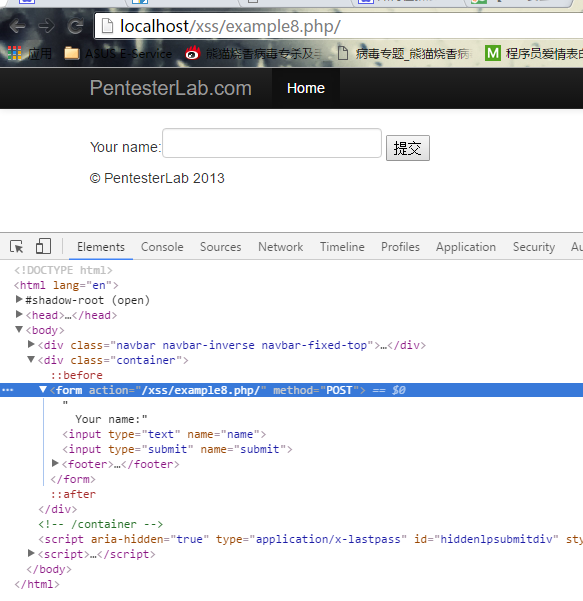
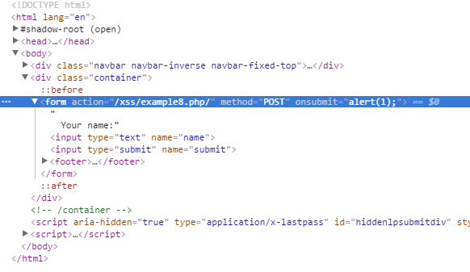

Web For Penterser I
本篇主要用于记录使用pentersterlab的学习历程，缘起大二小学期的密码学课程实践中的ECB附加实验 here
。之后看到这个网站penterlab,遂使用上面的教程学习，本文是关于web方面的基础。
ps:本篇先讲解使用方法，下载对应课程的ISO镜像（一般为32位的Debian系统），在虚拟机中使用就好（类似于liveCD的形式，各种环境已在ISO中配好），在外部就可以访问（注意http-only要在同一网段，或者虚拟机NAT上网采用端口转发）

主机访问localhost即可进入页面：

XSS
三种常见的XSS类型不多赘述，直接进题目
example1
无过滤的最简单的形式，传入的参数是name，猜想后端php应该是直接echo了 $_GET[‘name’]。
payload:
?name=<scRiPT>alert(1);</sCRIpt>
即可实现弹窗显示1的效果。
example2
例2对于script这个关键词进行了过滤但是可以使用例如sCRIpt这样的大小写混淆的方式进行XSS绕过，利用对于大小写没有进行过滤且html语言大小写的不敏感实现。
payload:
?name=<scRiPT>alert(1);</sCRIpt>
example3
例三有了新的过滤，尝试例1的payload发现只显示了alert1所以猜想的是对<>进行了过滤，尝试输入pen<script>testerlab，过滤后的效果是penterterlab,就是会进行关键字过滤后对剩余的字段进行拼接，那么就构造的payload是中间有被过滤字符，而前后两端的被过滤字符拼接后仍为所需要的被过滤字符即可，payload如下:
?name=<scri<script>pt>alert(1);</scri</script>pt>
example4
例四输入例1的payload后回车直接显示error ,这次的服务器端直接匹配script，只要出现script就会导致error的产生，所以这次的payload完全不能出现script字符串然而还要运行javascript脚本。HTML的标签中的事件可以执行js脚本。所以添加个img标签或dir <a等,绑定事件onerror，onmousermove等。测试payload如下：
?name=<img src='zzzz' onerror='alert(1)' />
example5
例5测试发现过滤了关键词alert，可以采用其他的函数达到同样的效果例如confirm
payload 1:
?name=<img src='zzzz' onerror='confirm(1)' />
此外还可以使用eval()函数与Stirng.fromCharCode函数结合
payload 2:
?name=<img src="1" onerror="eval(String.fromCharCode(97,108,101,114,116,40,49,41))">
上述数值为alert(1)各字符对应的十进制ascii码。
example6
例6，首先打开页面后并没有见到Hello,hacker而是只有hello，查看页面源代码在其中看到有一段js代码name变量的值被利用到了script中。

所以payload的利用方式就是先闭合引号然后再alert最后将后面的代码注释即可。
payload:
?name=hacker";alert($a);</script>//
example7
例7，跟上个题目类似，只不过这次对于特定的符号例如双引号，尖括号等进行了html_encode，这次$a后面接的是单引号，单引号默认情况不会被encode所以只需简单修改payload即可。
payload：
?name=hacker';alert($a);//
example8
例8，此题打开的时候存在输入框，有一定可能是存储型XSS，尝试后没有成功，根据官网课程的提示得知form表单中的url可以进行XSS注入，刚进入的初始页面如下：

对于form表单中的action进行修改.
payload:
/xss/example8.php/" onsubmit="alert(1);
修改之后的页面变为：

这样就实现了输入后提交进行弹窗的效果。
example9
例9，比较简单，跟例1相同只不过这次是跟在符号#后面输入payload。
但是这次的形式是DOM-based XSS,查看页面源代码可以获取到相关信息。
payload:
#<script>alert(1);</script>